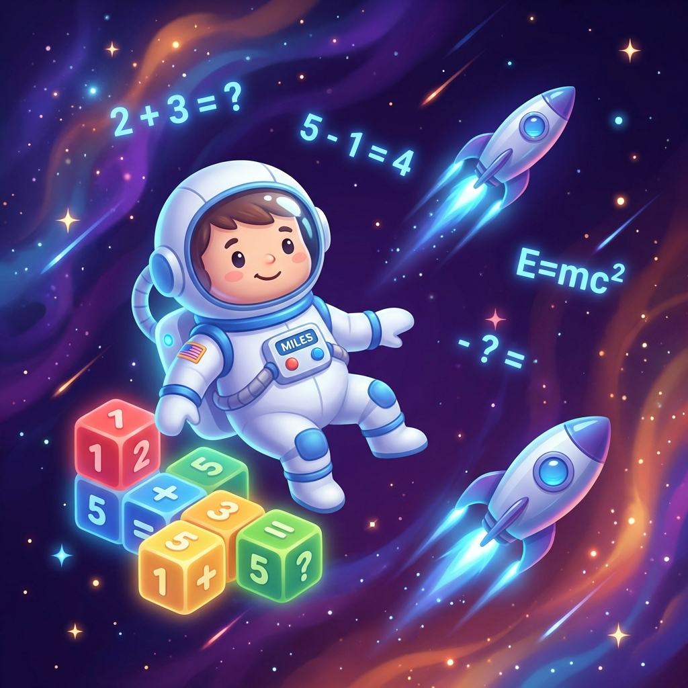

哥哥玩 Kahoot，弟弟也要玩：
Miles' Math
Mission.
「我也要按那個按鈕！」為了讓弟弟也能參戰，媽媽決定用 AI 幫他開外卦，打造專屬的答題遊戲。
故事是從陪哥哥複習功課開始的。現在學校很流行用 Kahoot 這個系統，畫面精美、音樂緊張刺激，還能即時排名。那天我在陪哥哥做題庫，旁邊的 Miles 看得眼睛發亮，一直吵著：「我也要玩！我也要回答！」
但問題是，哥哥的題目全是國語修辭和自然科學，Miles 一個幼兒園小孩哪看得懂？看著他想玩又玩不到的落寞表情，媽媽的設計魂（兼補償心態）就燃燒起來了。
「好，既然沒有適合你的，那媽媽做一個給你。」
"你負責算數學，媽媽負責把魔法變出來。"
— Vibe Coding 初體驗
第一階段：用說的就能寫程式？
一開始我用 ChatGPT 和 Gemini 試水溫。這就是傳說中的 Vibe Coding —— 我不用懂程式語法，只要負責「許願」。我跟它說：「我要一個簡單的加法遊戲，背景要黑色的。」
結果還真的跑得動！Miles 玩得超開心，我也覺得自己蠻厲害的（雖然只是出一張嘴）。但只要我想改個按鈕顏色，或者想加個音效，就要來來回回講好久，有時候還會改壞掉。
第二階段：Antigravity 的火力支援
後來我換了 Antigravity，這完全是另一個級別的體驗。
如果說之前像是在擠牙膏，現在就像是開外掛。我想加更多關卡？幾秒鐘就好了。UI 介面不順手？它馬上幫我優化。我發現我可以更大膽地提出要求，比如「我要一個連續答對的 Combo 火焰特效」，或者「把數字方塊做得像他在電視上看到的那樣」。
這讓我這個「設計師媽媽」終於可以專注在設計體驗上，而不是卡在那些看不懂的括號和分號裡。
既然是設計師，畫面不能輸
最讓我驚艷的是，我還用了 Antigravity 內建搭配的 Nano Banana 生成了一系列超可愛的太空人圖片。
以前做這種 Side Project，圖片都只能去網路圖庫找現成的，風格很難統一。但這次，我可以直接把腦袋裡那個「有點呆萌、穿著胖胖太空衣」的角色具象化。有了這些專屬美術素材，整個遊戲的質感瞬間從「陽春練習題」升級成「精緻小遊戲」。
Miles 看到那些太空人時指著螢幕大叫：「這是我的太空人！」那個瞬間，真的覺得一切都值了。
結語
從羨慕哥哥玩 Kahoot，到現在擁有自己的 Miles' Math Mission，這不僅僅是一個數學練習。
Vibe Coding 讓我們這種不會寫 Code 的父母，多了一種愛孩子的方式。我們可以把觀察到的需求，用科技快速地轉化成禮物。雖然我還是不會寫那些複雜的演算法，但看著兩兄弟現在可以一起趴在桌上玩遊戲（雖然玩的不一樣），我覺得這個超能力，實在是太好用了。
Keep Exploring, and Leave Traces.